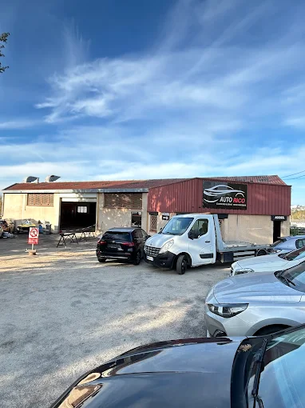
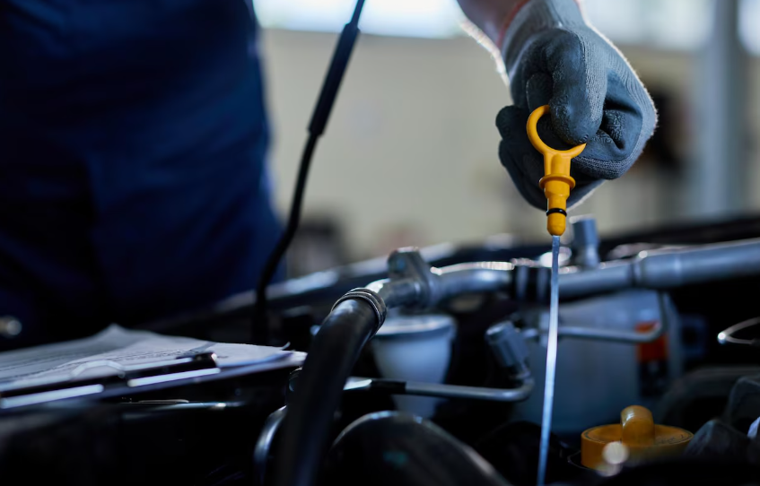
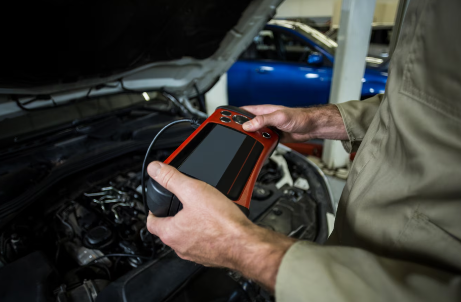

CAR AUTO 31
Votre partenaire automobile de confiance à Montrabé
Plus de 20 ans d'expérience dans la réparation, l'entretien et le diagnostic automobile. Nous prenons soin de votre véhicule comme si c'était le nôtre.
Expertise technique
Intervention rapide
Devis gratuit
Pourquoi choisir Car Auto 31 ?
Situé à Montrabé, notre garage familial met à votre service toute son expertise pour l'entretien et la réparation de votre véhicule. Nous privilégions la qualité, la transparence et le conseil personnalisé.
🏆 Expertise reconnue
Mécaniciens certifiés et formation continue aux dernières technologies
💰 Tarifs transparents
Devis détaillé et explications claires avant toute intervention
🕐 Disponibilité
Ouvert du lundi au vendredi, prise en charge rapide

Nos Services
Réparation Mécanique
Moteur, boîte de vitesses, freinage...

Vidange & Entretien
Huile, filtres, courroies...

Diagnostic Électronique
Scanner OBD2, erreurs moteur...
Besoin d'une intervention ?
Contactez-nous pour un diagnostic ou un devis gratuit
🕐 Horaires
Lundi au vendredi
9h - 18h